Do you like things that slither, are slimy, or have scales? Then we have
something for you. Take a look at our adoptable reptiles below.
1 / 17
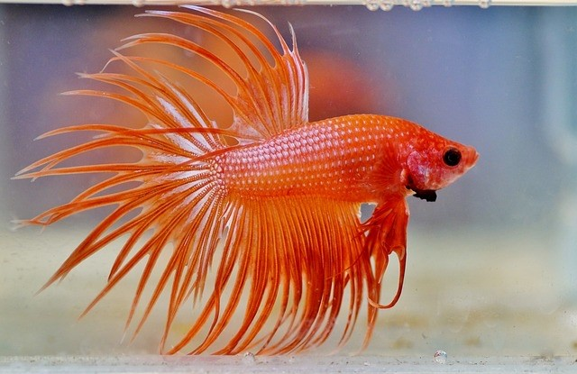
Cheetos the Beta cannot eat cheetos but he loves betta
pellets! Cheetos is super easy to take care of and doesn't need a huge
tank.
2 / 17
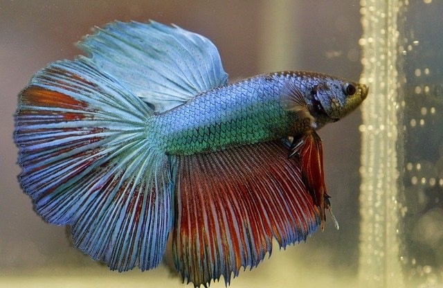
Nero is a beautiful blue beta with what appears like red
matter or blood on his fins. Nero is very majestic and will add a lot of
calm to any home!
3 / 17
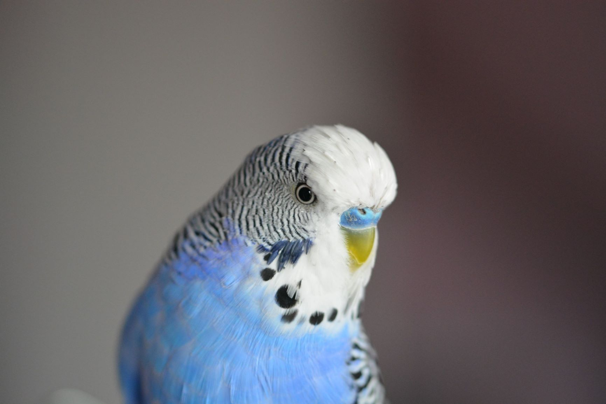
This blue parakeet's name is Belle. She certainly is the
"bell" of the ball! She loves to chatter with other birds and even people!
4 / 17
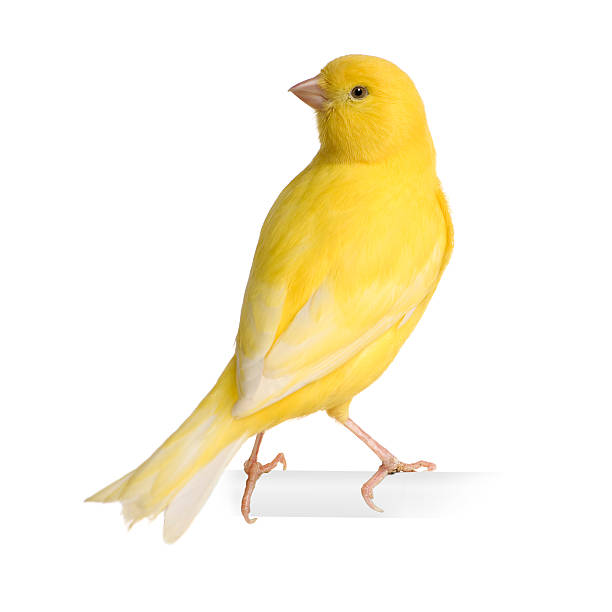
This gorgeous yellow canary is named Melemele. She has the
most beautiful yellow coat and an even more enchanting voice!
5 / 17
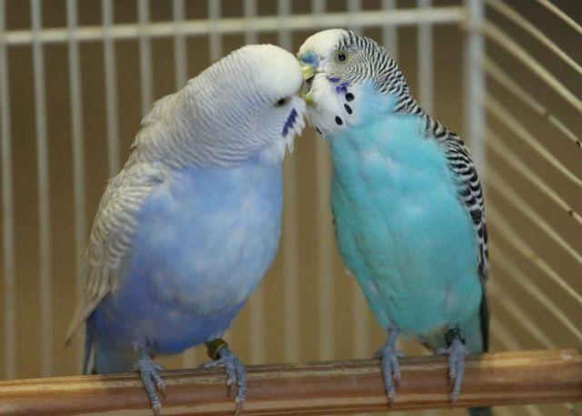
These fancy parakeets appear to have a strong bond. It would
be highly recommended that they be adopted together! Cassiopeia is the female
while the male is Hurcules.
6 / 17
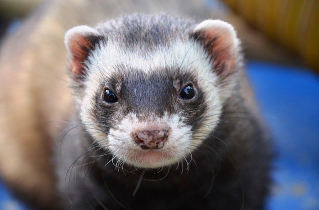
Lyra is fast and very quick witted. Children would have
a blast chasing her around the house! Lyra would be a unique and fun little
creature to own!
7 / 17
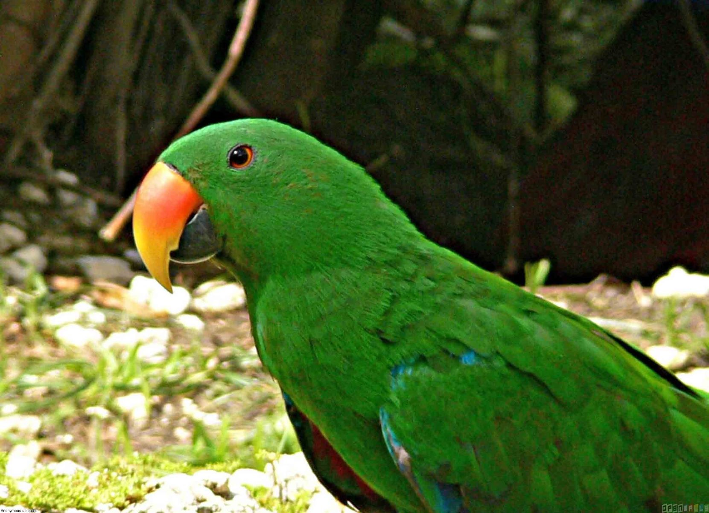
Zazu is an extremely talkative parakeet. He may be a chtterbox
but teaching him new words is too much fun to pass up!
8 / 17
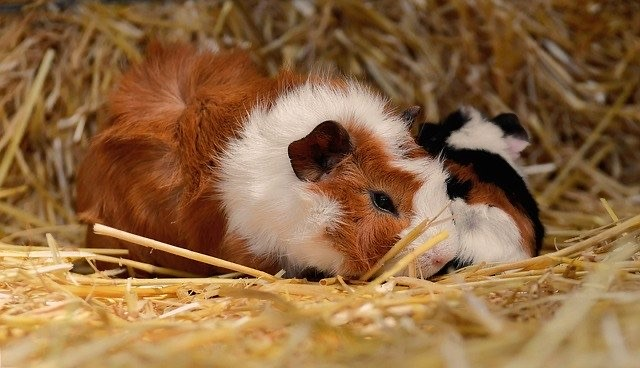
Shaggy and his best friend Scoob would be great additions
to any family! These two would be much happier together than apart.
9 / 17
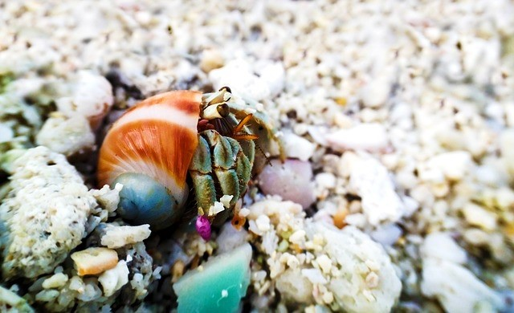
Jacques is looking for his forever home. He likes long
long walks on the beach and watching the sun set and rise. A perfect first
pet for almost any age!
10 / 17
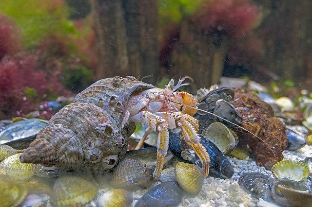
Shelly the hermit crab like to knick shells. So if any of
your shells go missing, check with Shelly first! Another great pet for a
beginner!
11 / 17
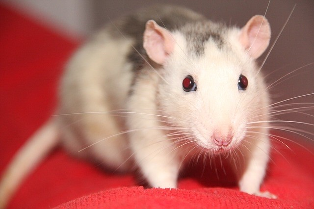
Scabbers is always escaping off somewhere, but he always
returns. We get the feeling he may be changing into Peter Pettigrew and
has been up to no good.
12 / 17
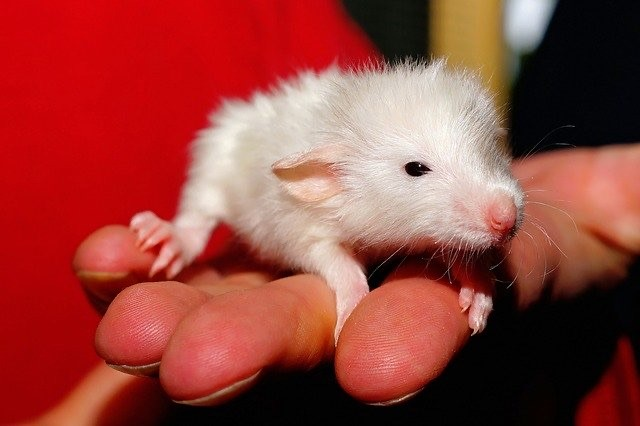
Roddy the rat just wants a nice life of his own. If you
can adopt him you might prevent him fom being "flushed away."
13 / 17
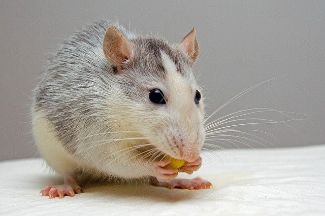
Rita is just trying to find her true love; Roddy the rat.
Perhaps if both are adopted together their romance can blossom!
14 / 17
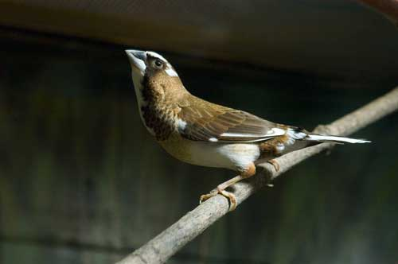
Michelangelo the Society Finch; could sing you a song as
beautiful as his paintings. Waking up to this built in alarm clock would
be a much more pleasant way to spend the morning.
15 / 17
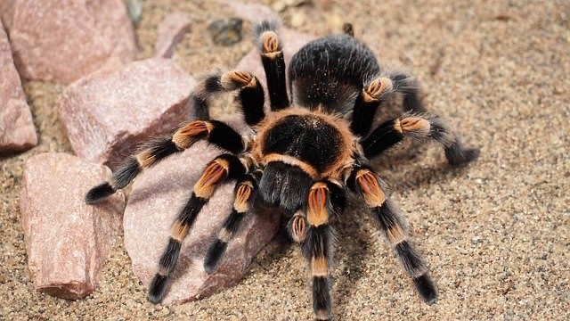
Aragog may look scary, but once you get to know him, he's
as sweet as a button. Aragog is a fascinating addition to our adoptable pets.
We expect he will be adopted soon, so act fast!!
16 / 17
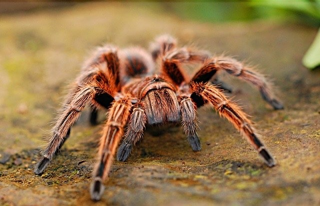
Minuit may have come from France. If he did, he certainly
travelled a long way. His name means midnight in French. All spiders look
scary, but the majority of them don't want to waste their venom on something
they know they won't be able to eat. Really they are just very interesting pets!
17 / 17
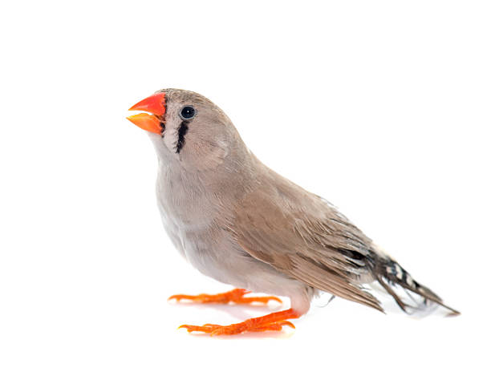
Pantalaimon is our beautiful Zebra Finch. When you aren't
looking Pantalaimon might change forms, but by the time you look back
he will again be a zebra finch. Thi would be a fascinating creature to adopt!